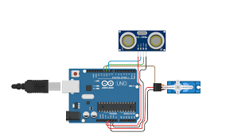

DIY Arduino Radar Project
Learn how to build a simple radar system using an Arduino, ultrasonic sensor, and a servo motor.
Step 1: Gather Components
- Arduino Uno
- Ultrasonic Sensor (HC-SR04)
- Servo Motor
- Jumper Wires
- Breadboard
- Potentiometer (Optional, for adjusting sensitivity)
Step 2: Wiring the Components
Connect the ultrasonic sensor and servo motor to the Arduino as follows:
- Ultrasonic Sensor VCC to Arduino 5V, GND to GND, Trig to Digital Pin X, Echo to Digital Pin Y.
- Servo Motor VCC to Arduino 5V, GND to GND, Signal to Digital Pin Z.
- (Optional) Potentiometer VCC to 5V, GND to GND, Wiper to Analog Pin A0.
Step 3: Arduino Code
#include <Servo.h>
Servo servoMotor;
const int trigPin = X;
const int echoPin = Y;
const int servoPin = Z; // Define the servo signal pin
const int potPin = A0; // Optional potentiometer pin
void setup() {
servoMotor.attach(servoPin);
pinMode(trigPin, OUTPUT);
pinMode(echoPin, INPUT);
Serial.begin(9600);
}
void loop() {
int angle;
if (analogRead(potPin) > 512) { // Optional: control angle with potentiometer
angle = map(analogRead(potPin), 513, 1023, 0, 180);
} else {
angle = map(analogRead(potPin), 0, 511, 180, 0);
}
servoMotor.write(angle);
delay(15); // Small delay for smooth movement
long duration = measureDistance();
int distance = duration * 0.034 / 2;
Serial.print("Angle: ");
Serial.print(angle);
Serial.print(", Distance: ");
Serial.print(distance);
Serial.println(" cm");
delay(100);
}
long measureDistance() {
digitalWrite(trigPin, LOW);
delayMicroseconds(2);
digitalWrite(trigPin, HIGH);
delayMicroseconds(10);
digitalWrite(trigPin, LOW);
return pulseIn(echoPin, HIGH);
}
Step 4: Assembly and Testing
Mount the ultrasonic sensor on the servo motor. Upload the code to the Arduino and test the radar's functionality.
